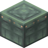

梾木蜂箱
Kousa Beehive
所属标签
合成获得 (1)
有序合成Atmospheric

原始 JSON
{
"neoforge:conditions": [
{
"type": "blueprint:and",
"values": [
{
"type": "neoforge:mod_loaded",
"modid": "woodworks"
},
{
"type": "woodworks:config",
"value": "wooden_beehives"
}
]
}
],
"type": "minecraft:crafting_shaped",
"category": "misc",
"group": "wooden_beehive",
"key": {
"#": {
"item": "atmospheric:kousa_planks"
},
"H": {
"item": "minecraft:honeycomb"
}
},
"pattern": [
"###",
"HHH",
"###"
],
"result": {
"count": 1,
"id": "atmospheric:kousa_beehive"
}
}